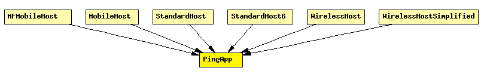

File: Applications/PingApp/PingApp.ned
C++ definition: click here
Generates ping requests and calculates the packet loss and round trip parameters of the replies.
Start/stop time, interval etc can be specified via parameters. To disable, specify empty destAddr or stopTime<=startTime.
Every ping request is sent out with a sequence number, and replies are expected to arrive in the same order. Whenever there's a jump in the in the received ping responses' sequence number (e.g. 1, 2, 3, 5), then the missing pings (number 4 in this example) is counted as lost. Then if it still arrives later (that is, a reply with a sequence number smaller than the largers one received so far) it will be counted as out-of-sequence arrival. So the number of really lost pings will be "lost" minus "out-of-order" (assuming there's no duplicate or bogus reply).
Uses PingPayload as payload for the ICMP(v6) Echo Request/Reply packets.
See also: PingPayload, ICMP, ICMPv6Core
The following diagram shows usage relationships between modules, networks and channels. Unresolved module (and channel) types are missing from the diagram. Click here to see the full picture.
If a module type shows up more than once, that means it has been defined in more than one NED file.
| MFMobileHost | Models a mobile host with a wireless (802.11b) card in ad-hoc mode. This model contains the Mobility Framework's 802.11 implementation, Nic80211, and IP, TCP and UDP protocols. The mobility model can be dynamically specified with the mobilityType parameter. |
| MobileHost | Models a mobile host with a wireless (802.11b) card in ad-hoc mode. This model contains the new IEEE 802.11 implementation, Ieee80211Nic, and IP, TCP and UDP protocols. The mobility model can be dynamically specified with the mobilityType parameter. |
| StandardHost | |
| StandardHost6 | |
| WirelessHost | Models a host with one wireless (802.11b) card in infrastructure mode. This module is basically a StandardHost with an Ieee80211NicSTA added. It should be used in conjunction with WirelessAP, or any other AP model which contains Ieee80211NicAP. |
| WirelessHostSimplified | Models a host with one wireless (802.11b) card in infrastructure mode, but using a simplified NIC that does not support handovers. This module is basically a StandardHost with an Ieee80211NicSTASimplified added. It should be used in conjunction with WirelessAPSimplified, or any other AP model which contains Ieee80211NicAPSimplified. |
| Name | Type | Description |
|---|---|---|
| destAddr | string | |
| srcAddr | string | |
| packetSize | numeric const | of ping payload, in bytes |
| interval | numeric | time to wait between pings (can be random) |
| hopLimit | numeric const | TTL or hopLimit for IP packets |
| count | numeric const | stop after count ping requests, 0 means continuously |
| startTime | numeric const | send first ping at startTime |
| stopTime | numeric const | send no pings after stopTime, 0 means forever |
| printPing | bool | dump on stdout |
| Name | Direction | Description |
|---|---|---|
| pingIn | input | |
| pingOut | output | |
| pingv6In | input | |
| pingv6Out | output |
simple PingApp parameters: destAddr: string, // destination IP or IPv6 address srcAddr: string, // source IP or IPv6 address (useful with multi-homing) packetSize: numeric const, // of ping payload, in bytes interval: numeric, // time to wait between pings (can be random) hopLimit: numeric const, // TTL or hopLimit for IP packets count: numeric const, // stop after count ping requests, 0 means continuously startTime: numeric const, // send first ping at startTime stopTime: numeric const, // send no pings after stopTime, 0 means forever printPing: bool; // dump on stdout gates: in: pingIn; out: pingOut; in: pingv6In; out: pingv6Out; endsimple